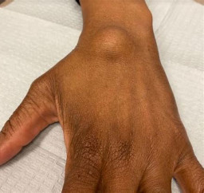

70% of ganglion cysts occur on the dorsal wrist. 20% occur on the volar wrist. 10% occur elsewhere (top of foot, fingers, etc)
Note: If the allen test shows poor perfusion, watch and wait is not a good idea.
This page was last updated on
Disclaimer: Information presented in the template should be re-checked and should not be used alone to guide patient care or substitute for clinical judgement.
Note: Please copy text into the EMR prior to adding any HIPPA information. Though no information is being saved/transmitted on this site, typing private information into a web page is generally bad practice.